Starting Point - sets the player’s starting location in the level. Only works when placed in the MainStage, not in a SubArea. If no Starting Point is placed, the player will begin 3 blocks from the left edge of the screen.

Checkpoint - marks a respawn point when touched by the player. Upon death, the player will restart at the most recent checkpoint reached, unless they lose all lives, in which case they start from the beginning. Can be placed in any of the 8 directions. By default, it awards a Super Mushroom when activated, but this can be changed to give HP, a Star, or nothing.
Flagpole - ends the level when touched by the player, who will slide down and then walk 34 blocks to the right, to the screen’s edge, or into a Castle. The score awarded depends on the height at which the pole is touched. The pole’s height can be adjusted, and it can be set to allow or prevent the player from jumping over it.
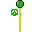
Castle - usually placed after other level-ending objects, but can also end the level if the player walks inside (only works if it’s more than 5.5 blocks from the left edge of the screen). If “IsBigCastle” is enabled, it appears as a larger castle but functions the same.
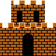
Goal Box - a level-ending object. When the player touches one of its four icons, they begin walking to the right. The icon touched determines the score awarded.
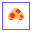
Goal Pole - a level-ending object that ends the level only when the moving pole is touched. The higher the player touches it, the greater the score awarded. Afterward, the player walks to the right.
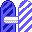
Magic Orb - ends the level when touched. It has gravity, and the player remains in place after it’s touched.
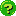
Axe - a level-ending object. When touched, it swings to the left and causes any Boss Bridges to crumble into lava. The player then begins walking to the right.
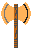
Princess - a level-ending NPC that can be set as real or fake. You can customize its dialogue, though by default it says, "THANK YOU {Name}! BUT OUR PRINCESS IS IN ANOTHER CASTLE!"
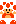
NPC - an interactable character with three variants (Toad, Neoarc, Signboard) that function the same. By default, they do nothing, but can be set with custom dialogue, different triggers for activation, and actions like giving items or performing actions after talking. They offer a few font options and customizable voice types/octaves, including instruments and unique sounds like "Bird," "Helicopter," and "Gun Shot."
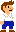
NPC (Pixel Art) - combines NPC features with pixel art. Includes custom dialogue, item-giving triggers, and voice octave settings from NPCs, along with animated pixel-art IDs for idle, talking, and item-giving states, offering lots of customization.
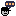
Wind - creates a customizable wind effect in a set area. You can adjust its duration, force, interval, and direction.
Rain - creates a customizable rain effect in a set area. You can adjust if it is soft or not, and darken the sky.
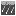
Camera Stop - prevents the camera from scrolling further right, based on the direction of the red arrow.
Enemy Stop - prevents certain enemies from moving beyond a set point in the level. Activates when loaded.
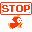
Camera Boundary - prevents camera scrolling in the set direction. It can be unlocked in three ways:
- Destroy any attached block: Works only when placed on a block. disables when that block is destroyed
- Destroy all attached blocks: Similar to the above but requires all attached blocks to be destroyed
- Touch Boundary: Doesn’t require placement on a block. The camera only moves past the boundary when the player enters a customizable “Affected Area,” locking the previous section. The camera can scroll both ways.
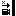
Object Generator - creates objects that spawn from the top of this invisible entity, or from the bottom or right of the screen if configured. You can set the time interval between spawns, the probability of an object appearing at each interval, and the maximum number of that object allowed on screen before spawning stops.
Bowser Fire Generator - spawns Bowser’s fire at random heights when placed. Commonly used as a lead-up or added challenge before boss fights.
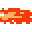
Speech Point - a textbox that activates when the player walks into the “AreaForTrigger.” You can adjust the trigger area’s size, the speech bubble type, font, and the delay between each character appearing. It can also be set to pause the game when triggered, forcing the player to read it, or to show a small hint bubble so the player knows it’s there.
BGM Area - plays a different song when the player is inside the Affected Area. It can also be set to play throughout the entire area or subarea. You can choose from any song in the current theme, or select Mute, which is available in all themes.
Warp Zone Flag - when touched, it displays the words "WELCOME TO WARP ZONE." It has no other function.
Boundary Warp - placed at the bottom or top of the screen to teleport the player if they fall through the bottom or climb through the top. Choose the correct direction (Down for bottom, Up for top), drag the player over it, and select a subarea. Then place the exit in that subarea, facing the correct direction.
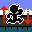